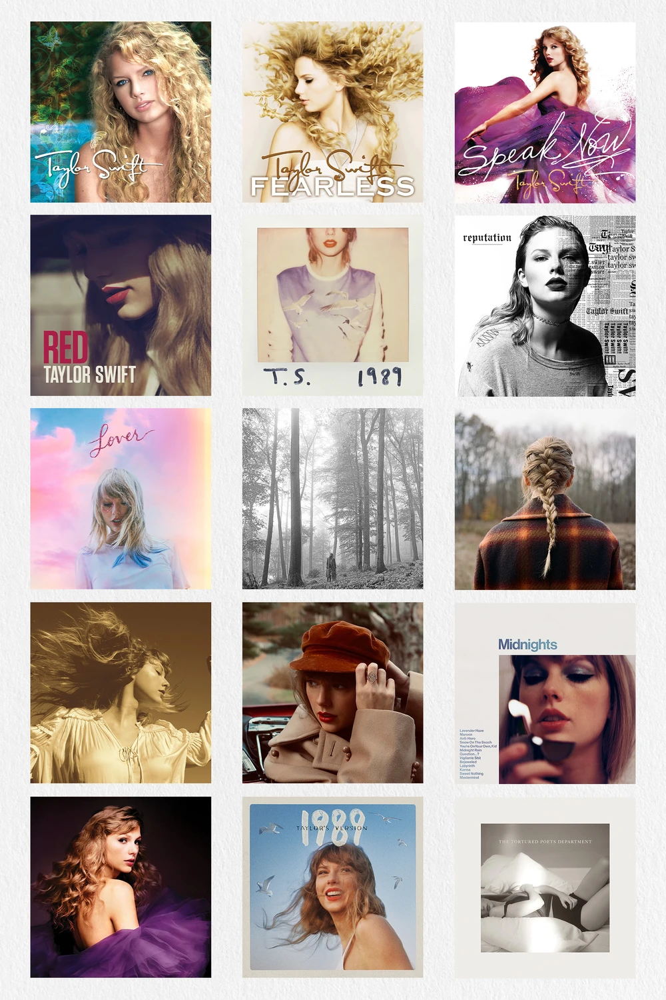

FIT2179 DV2 · Azhafira Y
How did Taylor Swift become one of the biggest global artists ever?
From a 16-year-old country singer in 2006 to a global phenomenon in 2024 — explore 18 years of musical evolution, world tours, and streaming dominance.
1. A career at a glance
Taylor Swift has released 11 original studio albums across 5 genre eras since 2006. Each dot below is one album — coloured by its genre and sized by total Spotify streams. The growth is hard to ignore.
2. Always reinventing
Most artists stick to one sound. Taylor Swift has had five. From Country to Pop to Indie Folk — her genre shifts kept fans guessing and critics talking for nearly two decades.

Taylor Swift albums across different eras
3. The songs everyone knows
Her biggest hits span multiple eras — proof that no single album defines her. These are the 10 most-streamed Taylor Swift tracks on Spotify.
4. Taking over the world
Beyond the music, Taylor Swift's tours have reached 24 countries across 5 continents. The map below shows where she performed and how much revenue each city generated. Darker countries = more shows. Bigger dots = more revenue.